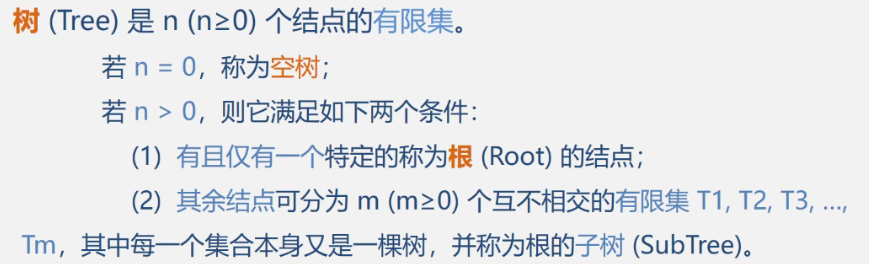

5/8 树和二叉树（上）
5.1 树形结构



- 为何要重点研究每结点最多只有两个“叉”的树?
√二叉树的结构最简单，规律性最强;
√可以证明，所有树都能转为唯一对应的二叉树，不失一般性。 - 二叉树是n (n≥0)个结点的有限集，它或者是空集(n = 0)，或者由一个根结点及两棵互不相交的分别称作这个根的左子树和右子树的二叉树组成。
- 特点：
1、每个结点最多有俩孩子(二叉树中不存在度大于2的结点)。
2、子树有左右之分，其次序不能颠倒。
3、二叉树可以是空集合，根订以有空的左子树或空的右子树。 - 二叉树不是树的特殊情况，二叉树结点的字数要区分左子树和右子树，即使只有一个子结点

5.2 案例引入


5.3 树和二叉树的抽象数据类型定义


5.4 二叉树的性质和存储结构
5.4.1 性质
- 在二叉树的第i层最多由2^(i-1)个结点，最少一个
- 深度为k的二叉树最多有2^k-1个结点，最少k个
- 对某一棵二叉树，如果其叶子树为n0，度为2的节点数为n2，则n0=n2+1;
证明：设总边数B，总结点数n，度为1的节点数为n1
从下往上看：B=n-1
从上往下看：B=n22+n11
又n=n0+n1+n2
可得n0=n2+1
满二叉树：—棵深度为k且有2k-1个结点的二叉树称为满二叉树。

在满二叉树中，从最后一个结点开始，连续去掉任意个结点，即是一棵完全二叉树。
满二叉树也是完全二叉树，反之则不一定
- 具有n个节点的完全二叉树的深度为[log2 n]+1

5.4.2 顺序存储结构


浪费空间，最坏的情况是深度为k的二叉树只有k个结点但占用了2^k-1个单位的空间
5.4.3 链式存储结构


- 在n个结点的二叉链表中，有n+1个空指针域
n个结点共有2n个指针域，除了根节点外每个节点占用一个，所以剩下2n-(n-1)=n+1个空指针域

5.5 遍历二叉树
如果规定先左后右，则只有三种遍历情况：
DLR——先序遍历；LDR——中序遍历；LRD——后序遍历；


已知先序中序和已知中序后序是可以求出二叉树的，但是一直先序后序不可以。
算法实现：先序遍历/中序/后序（递归方式）


时间效率：O(n)//每个结点只访问一次
空间效率：O(n)//栈占用的最大辅助空间
算法实现：中序遍历（非递归方式）

二叉树的层次遍历
按从上到下、从左到右的顺序访问每一个结点


应用——二叉树的建立：利用带＃的先序序列

应用—— 二叉树的复制

应用——二叉树的深度

应用——结点总个数

应用——求叶子节点数

5.5 线索二叉树Threaded Binary Tree
- 当用二叉链表作为二叉树的存储结构时，可以很方便地找到某个结点的左右孩子;但一般情况下，无法直接找到该结点在某种遍历序列中的前驱和后继结点。所以引入线索二叉树。
- 上文提及：在n个结点的二叉链表中，有n+1个空指针域


本博客所有文章除特别声明外，均采用 CC BY-NC-SA 4.0 许可协议。转载请注明来自 ClancyCC！
评论